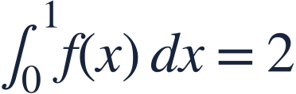
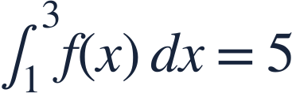
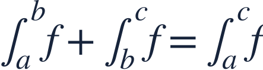
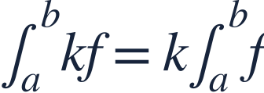
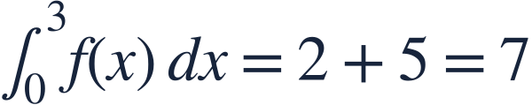
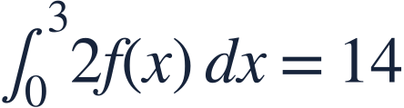
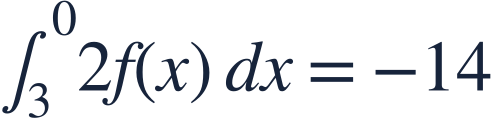
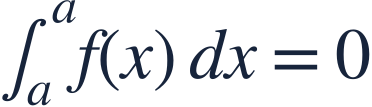
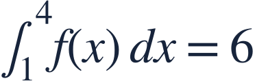

Properties of integrals
적분의 성질


Integral properties let us combine known accumulations without finding a formula for f.
적분의 성질로 함수식 없이도 알고 있는 누적량을 조합할 수 있습니다.


Integral properties let us combine known accumulations without finding a formula for f.
적분의 성질로 함수식 없이도 알고 있는 누적량을 조합할 수 있습니다.

Adjacent intervals add, and reversing limits changes the sign.
이웃한 구간의 적분은 더하고 적분구간을 뒤집으면 부호가 바뀝니다.

Constants scale signed accumulation; they do not change the interval.
상수배는 부호 있는 누적량을 배수로 바꾸며 구간은 그대로입니다.

Join the two adjacent intervals first.
먼저 이웃한 두 구간을 연결합니다.

Multiply the entire accumulated value by 2.
누적량 전체에 2를 곱합니다.

Reversing the direction reverses the signed accumulation.
적분 방향을 뒤집으면 누적량의 부호가 바뀝니다.

An integral over a zero-length interval is zero, regardless of the function height.
구간 길이가 0이면 함수의 높이와 관계없이 정적분은 0입니다.

Find the integral from 4 to 1 of (f(x)+2).
4에서 1까지 f(x)+2를 적분한 값을 구하세요.